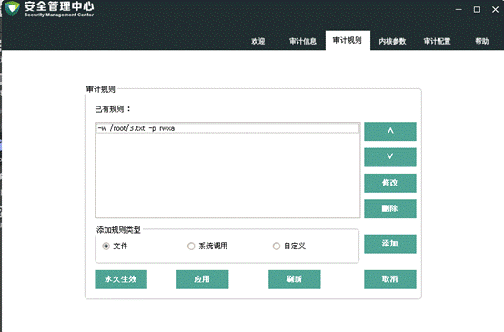

目录
程序启动后，显示欢迎页面。欢迎页面展示当前用户的功能介绍、用户名、用户角色、Selinux模式、版本、运行模式以及发布日期信息。
点击【打开】按钮，选择日志文件打开，显示区显示日志内容
结果如下：
点击【查询】按钮弹出查询设置框：
设置条件，点【生成查询语句】，点【确定】，查询结果显示在 显示区中：
点击【报告】，弹出报告设置框：
选择好条件后，点确定，报表内容显示在显示区中。
界面如下：

1. 审计规则列表：列出当前的审计规则
2.上移、下移、修改、删除当前规则，对应按钮【^】【v】【修改】【删除】
3.添加审计规则分三类：文件规则、系统调用、自定义规则
1）文件规则：
选中文件后，设置文件规则，点【确定】，该规则就添加到了规则列表中。
文件追踪功能：输入执行文件的路径，点追踪，显示追踪结果：
2）系统调用规则：
设置完毕，点【确定】，规则即显示在规则列表中。
3）自定义规则：
输入自定义规则，直接输入规则，点【确定】即可。
4. 应用规则：点【应用】后，将规则列表的规则全部设置。
5.永久生效：点【永久生效】后，规则被写入到规则配置文件中。
界面如下：
点击【应用】，立即生效
点击【永久生效】，将设置写入规则配置文件。
设置好审计服务配置项后，点【确定】，将配置内容写入审计服务配置文件。
重启审计服务后生效。